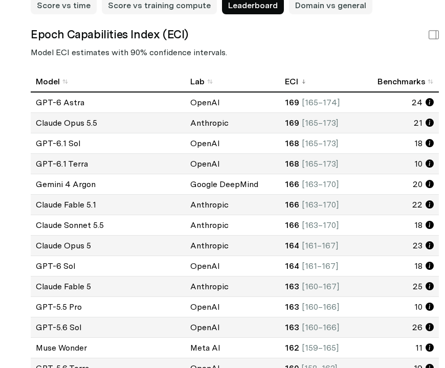

Nouveautés
19/10/2026 à 07:56 UTC Dernière exécution
Cette semaine, deux tendances ressortent : les classements se resserrent en haut et de nombreux travaux portent sur l'efficacité des architectures et l'évaluation des modèles.
Côté classements, la page modèles d'Artificial Analysis suit désormais Claude Opus 5.5, Claude Sonnet 5.5, GPT-6 Sol, Gemini 3.5 Flash-Lite, Kimi K3, K2 Horizon 375B A23B et Muse Wonder Full. Elle introduit aussi de nouvelles suites d'évaluation : Terminal-Bench 4.0, AA-LCR v1.1, GDPval-AA v2.1 et AutomationBench-AA. Le leaderboard llm-stats, qui compare plus de 300 modèles, désigne Claude Opus 5.5 comme meilleur modèle global (index de 59.0) et Kimi K3 comme meilleur modèle open-weight (93.5 % sur GPQA). Muse Wonder est aussi mentionné par 机器之心 : Meta lancerait Muse Wonder et publierait en open source les poids de Muse Spark Open.
Côté recherche, Virtual Head Attention se distingue nettement. Deux opérations linéaires légères suffisent à améliorer la qualité en long contexte tout en réduisant le coût de calcul. Sur RULER, le score passe de 73.0 (GQA) à 84.4 (VHA). Le papier se compare aussi à MLA et MFA. En vidéo, Open-o3-Video-v2 raisonne à partir de preuves spatio-temporelles vérifiables. Il atteint mAM = 40.4 % et mLGM = 56.3 % sur V-STaR. En robotique, Long-WAM allonge le contexte des modèles world-action et fait passer RoboCasa GR-1 de 63.3 % à 78.7 %.
Mistral a deux actualités. L'entreprise lance Timestral, sa première famille de modèles de fondation pour séries temporelles. Elle annonce la première place sur GIFT-Eval, TIME et fev-bench avec moins de paramètres que les modèles précédents, mais sans publier les scores. Mistral annonce aussi un partenariat avec Cloudera autour d'une IA souveraine pour les données d'entreprise. Sur le même créneau des séries temporelles, Birla AI Labs publie Yug, un modèle de forecasting zero-shot.
Plusieurs nouveaux benchmarks méritent aussi un coup d'œil : - SolBehave vérifie la correction des smart contracts générés par LLM. Le taux de compilation varie de 26.4 % à 92.7 %, et 13 % à 44 % des contrats divergent lors des tests de rejeu. - VocalGrad révèle des limites importantes de perception acoustique chez les modèles audio-langage (0.2 pour les humains contre 0.5 pour les LALMs). - SciExam for ENSO teste si des agents peuvent construire des modèles climatiques d'El Niño à partir d'observations réelles.
Enfin, Index-Translate-2B arrive sur ModelScope : un modèle de traduction en 150 langues qui suit des instructions de style et de structure.
15/10/2026 à 09:32 UTC
Cette semaine, deux sujets dominent : les agents, qu'on veut rendre plus fiables et moins chers, et une série de classements qui se disputent le titre de référence.
Côté modèles, Ling-3.1-flash d'inclusionAI arrive sur ModelScope. C'est un modèle hybride conçu pour des tâches complexes et réelles. Il revendique de bons résultats sur GDPVal-AA V2.1, HealthBench Professional, FrontierSWE et Terminal-Bench 4.0, mais les scores ne figurent pas dans les données collectées. Il faudra aller les vérifier sur la fiche. Pour les interfaces graphiques, GroundGUI part de Qwen3-VL-8B-Instruct. Il combine un jeu de données de qualité (ScreenRef) et une méthode qui passe de la distillation à l'apprentissage par renforcement (D2RL). Son GroundGUI-8B annonce 95,2 % sur ScreenSpot-V2, 63,9 % sur ScreenSpot-Pro et 65,4 % sur OSWorld-G. En vidéo, VideoJev propose une famille de modèles qui structurent leurs décisions à partir d'événements visuels. Les améliorations annoncées en mIoU moyen sont de 6,7 points pour la version 4B et de 10,8 points pour la version 35B-A3B.
Les agents occupent une bonne partie de la veille. Agent in a Bottle pose une question très concrète : un agent LLM peut-il transformer ses capacités en artefacts réutilisables et peu coûteux ? Le benchmark BOTTLED annonce 82 % de macro-F1 pour un coût déclaré 657 fois plus faible. SPLATIFY est un système multi-agents qui transforme des articles de recherche en code 3D Gaussian Splatting entraînable. Il ferait passer le développement de plusieurs semaines à quelques minutes, avec jusqu'à +2,4 dB de PSNR sur 30 articles. Une étude de cas apporte un contrepoint utile : des agents de codage y construisent un système de santé en ligne, supervisés par un opérateur sans formation en génie logiciel. Côté outillage, DeepSeek publie une nouvelle alpha de deepseek-harness, qui ajoute une couche de compatibilité avec Claude Code.
Pour l'inférence, DoSA (Dots Sparse Attention) annonce jusqu'à 2,74 fois plus de vitesse que SGLang. Le délai avant le premier token est réduit d'un facteur 1,94 sur GLM-5.2 et de 1,50 sur DeepSeek-V3.2. PreciseCoder ajoute à la récompense par tests unitaires un signal qui valorise les modifications locales vérifiées. Les correctifs produits sont plus petits, pour un taux de réussite équivalent.
Côté évaluation, Scale publie de nouveaux classements (Humanity's Last Exam (Diamond), SWE Atlas, DistressBench…). BenchLM place Claude Opus 5.5 en tête (86,43), devant GPT-6 Astra (84,88) et GPT-6.1 Sol (84,18). Enfin, DecisionRobust montre que les modèles de décision de type JEV restent vulnérables à certaines manipulations adverses, en texte comme en image.
Hors technique, Mistral ouvre un hub à Munich consacré à l'IA physique et industrielle. Anthropic s'installe à Singapour et signe un protocole d'accord avec le gouvernement.
14/10/2026 à 07:40 UTC
Cette fournée est dominée par l'apprentissage par renforcement appliqué au raisonnement et aux agents. TPPO propose une variante de PPO qui s'appuie sur une valeur cumulative pour évaluer les actions. Les auteurs annoncent des gains de 7,0 points sur Qwen3-4B-Base et de 8,4 points sur Qwen3-8B-Base en raisonnement mathématique. Côté agents, PR-OPD distille des « représentations privilégiées » en on-policy et revendique +4,7 points sur ALFWorld et +14,0 sur WebShop. Plus ambitieux, ClawLoop décrit une boucle d'auto-amélioration en trois phases, sans modèle externe, testée sur des modèles Qwen (dont Qwen3.6-27B et Qwen3.5-4B). Les scores précis ne sont pas fournis.
Sur la sécurité, un papier mérite l'attention : Narrow Multimodal Fine-Tuning Can Induce Emergent Misalignment. Il montre qu'un fine-tuning étroit de modèles vision-langage peut entraîner des comportements largement désalignés et dangereux, ce qui étend au multimodal un phénomène jusqu'ici documenté surtout sur le texte.
Côté modèles publiés, OpenBMB met en ligne sur ModelScope deux déclinaisons de MiniCPM-V 4.7 (35B-A3B) : une version AWQ quantifiée pour l'inférence on-device, et une version DSpark accompagnée de résultats d'évaluation par axe (MMMU, MathVista, OCRBench, code, maths…). Cloudflare publie Clef, un modèle multimodal de décision post-entraîné à partir de Qwen3.8-27B. Il lit des états en texte, JSON, image ou vidéo et renvoie une probabilité pour chaque option autorisée. En génération, Fish Audio Drama 3 vise des performances vocales « dirigées » à partir de textes, avec clonage de voix et édition de dialogue. DMAD génère vidéo et audio à partir de texte par distillation adversariale.
Dans l'industrie, Mistral annonce une levée de 3 milliards d'euros pour son infrastructure et ses recherches, avec un positionnement « souverain et open-weight ». MiniMax multiplie les annonces au Japon : une conférence sur la propriété intellectuelle, où apparaît un « MiniMax H3 IP Edition », et une présentation à la WaytoAGI Global AI Conference mettant en avant Hailuo 2.3, M2.7 et Speech 2.8.
Enfin, côté évaluation, SWE-Game propose 247 tâches pour mesurer si les agents de code savent construire des jeux. Opus5 y arrive en tête sur les cinq types de tâches, avec un score de 50,38. Un autre papier, Same Output, Different Gold, rappelle que le seul choix de la référence peut déplacer un score multilingue de près de 5 points F1, et jusqu'à 7,55 dans la pire langue. C'est un bon rappel de prudence avant de lire les classements ci-dessous.
Sélection : parmi les items jugés pertinents par le tri automatique (note ≥ 3/5, voir C5), Claude Code retient les 30 mieux notés puis choisit, pour chaque domaine représenté, les 2-3 items les plus représentatifs — ce n'est pas un classement strict par note, mais un choix éditorial fait par l'IA pour couvrir la diversité des sujets.
Top nouveauté par domaine
Texte
- Virtual Head Attention : meilleure qualité en long contexte à moindre coût, avec un RULER qui passe de 73.0 (GQA) à 84.4 (VHA).
- Index-Translate-2B : traduction en 150 langues pilotable par instructions. Les scores cités dans les données (0.7569 instTrans IFscore, 0.6443 MEME) concernent le modèle de comparaison Hy-MT2-1.8B, et non Index-Translate-2B lui-même.
- Yug : modèle de fondation de Birla AI Labs pour la prévision zero-shot de séries temporelles.
Vision
- Open-o3-Video-v2 : raisonnement vidéo fondé sur des preuves spatio-temporelles, avec mAM = 40.4 % et mLGM = 56.3 % sur V-STaR. Qwen3-VL-4B fait partie des modèles cités.
- Long-WAM : contexte étendu pour le contrôle robotique, de 63.3 % à 78.7 % sur RoboCasa GR-1. Également évalué sur LIBERO-Long, RoboTwin 2.0 et DOMINO.
- 量子位 : la presse tech chinoise relaie de nouveaux modèles (EdenLive, GeoPT).
Agents
- PsyBer-Agent : agent utilisateur inspiré de la psychologie pour tester les systèmes de recommandation avant leur mise en production. Il est accompagné d'un benchmark multimodal, le PsyBer Benchmark.
- SciExam for ENSO : certains agents produisent des modèles d'ENSO compétitifs, qui reflètent les débats scientifiques encore ouverts.
- EvoSignal : conception évolutionnaire guidée par LLM de programmes de feux de circulation, avec un temps d'attente réduit de 16.8 % à 49.2 %.
Multimodal
- Hodge-Laplacian Mixture of Experts : substitut de PDE sur maillages non structurés. Sur AirFRANS, l'erreur L2 relative baisse de 31 % et la MSE intérieure de 47 % par rapport à Transolver.
- PDE-JEPA : apprentissage prédictif de représentations pour les PDE paramétriques, évalué sur 9 benchmarks (scores non précisés).
- Ephris : modèle de fondation pour graphes de Nums AI, qui classe les nœuds par apprentissage en contexte.
Benchmarks
- Artificial Analysis : la comparaison intelligence, performance et prix intègre Claude Opus 5.5, GPT-6 Sol et Kimi K3, ainsi que de nouvelles suites comme Terminal-Bench 4.0 et AA-LCR v1.1.
- llm-stats : Kimi K3 y est présenté comme le meilleur modèle open-weight (93.5 % GPQA). Dans l'extrait OpenCompass, Kimi-K3 (high) est 7e avec 79.1 de moyenne, derrière un autre modèle open source, Qwen3.8-Max (3e, 80.6). Le classement indépendant ne confirme donc pas cette première place, même si les métriques diffèrent (GPQA contre moyenne multi-domaines). De même, llm-stats désigne Claude Opus 5 comme meilleur modèle pour le code (27 arena). OpenCompass place bien Claude Opus 5 (high) 1er en moyenne (83.3), mais seulement 4e en code (93.3), derrière GPT-5.5 (96.5), GPT-5.6-Sol (96.3) et Qwen3.8-Max (95.5).
- Timestral : Mistral annonce la 1re place sur GIFT-Eval, TIME et fev-bench, sans scores publiés.
Code
- SolBehave : évalue le comportement réel des smart contracts générés au-delà des tests unitaires (compilation de 26.4 % à 92.7 %, divergence de 13 % à 44 %). Gemma-4-31B fait partie des modèles cités.
- RSI-Anything : réparation de code guidée par un world model qui anticipe le résultat des actions, évaluée notamment sur CodeContests.
- 机器之心 : Meta lance Muse Wonder et ouvre les poids de Muse Spark Open. Muse Wonder Full figure aussi parmi les modèles suivis par Artificial Analysis.
Audio
- VocalGrad : benchmark de perception acoustique qui révèle des limites importantes chez les LALMs (0.2 pour les humains contre 0.5 pour les LALMs).
- Dynamic Band Splitting : séparation de sources avec des bandes adaptées à chaque mélange, et un gain moyen de 29.0 % en SI-SDR sur DnR v2.
- Open ASR Leaderboard : nouveaux modèles de reconnaissance vocale classés, dont niagara-19m/38m d'abr-ai et ARK-ASR-0.6B/3B d'Edge0.
Autre
- Stay CALM : agrégation en ligne calibrée pour la prévision à plusieurs horizons quand les retours arrivent en retard et se chevauchent.
- QoT dans les réseaux quantiques : compare calcul, simulation et apprentissage pour estimer la fidélité de transmission.
Benchmarks
Couleur = organisation (même couleur sur les deux graphiques) :
OpenCompass — classement par catégorie (top 10)
4 familles d'épreuves automatisées (questions à réponse vérifiable) : connaissance (culture générale, QCM factuels), raisonnement (logique, déduction), mathématiques et code. Chaque modèle répond à des milliers de questions ; le score est le pourcentage de bonnes réponses. Classement calculé par OpenCompass, indépendant des éditeurs de modèles.
Source : opencompass.org.cn — données collectées le
LMArena — classement par catégorie (top 10)
Pas un examen automatisé : des personnes réelles comparent en aveugle les réponses de deux modèles à la même question (texte, code, image ou vidéo générée) et votent pour la meilleure. Chaque vote fait monter ou descendre un score de type Elo (comme aux échecs) : gagner contre un modèle fort rapporte plus de points que gagner contre un modèle faible. Mesure une préférence humaine perçue, pas une exactitude technique vérifiable.
Source : arena.ai — données collectées le
Open ASR Leaderboard — reconnaissance vocale (top 10)
Taux d'erreur de transcription (WER, Word Error Rate) : pourcentage de mots mal transcrits par le modèle à partir d'un enregistrement audio, moyenné sur plusieurs jeux de données de référence (réunions, podcasts, discours...). Plus bas = meilleur.
Source : huggingface.co (Hugging Face) — données collectées le
Epoch Capabilities Index (ECI)
L'ECI résume la performance d'un modèle sur plus de 50 benchmarks différents en une seule note de capacité générale (comme un indice composite). Problème qu'il résout : un benchmark isolé finit par se "saturer" (tous les modèles approchent 100 %, impossible de les départager) — l'ECI compare les modèles entre eux sur l'ensemble des épreuves pour rester discriminant même quand certains tests individuels sont dépassés. Ce n'est pas une échelle en pourcentage : seule la position relative entre modèles compte, pas la valeur absolue.

Source : epoch.ai — capture d'écran (tableau non extractible en texte), prise le
Open source
Pour chaque catégorie, le meilleur modèle open source (licence ouverte) par performance, et le plus léger (par nombre de paramètres, quand cette information est publiée par la source). La licence exacte de chaque modèle est indiquée — "open source" recouvre des licences très différentes (Apache 2.0, MIT, licences communautaires propres à un labo...).
🏆 Meilleure performance (open source)
🪶 Plus léger (open source)
Sorties open-weight récentes (hors classements)
Modèles open-weight publiés sur le Hub Hugging Face que nos 3 classements n'ont pas (encore) repris — pas de score de performance ici, seulement la sortie et sa licence exacte.
Model Review
Résumé automatique (généré par un LLM local à partir de la fiche officielle) des nouveaux modèles publiés sur Hugging Face, toutes tâches confondues, depuis la dernière exécution du pipeline.
Sources
Toutes les sources suivies par le pipeline. active : collectée en continu. essai : candidate récemment admise, en période d'observation avant promotion ou exclusion automatique (voir méta-veille, C7). désactivée : écartée après la période d'essai faute d'avoir produit du contenu pertinent.
| Source | Type | Langue | Statut |
|---|---|---|---|
| AINews (smol.ai) | agregateur_reference | en | active |
| Anthropic News | publications | en | active |
| Artificial Analysis | benchmarks | en | active |
| DeepSeek API Docs — News | publications | en | active |
| Epoch AI Benchmarking Hub | benchmarks | en | active |
| GitHub releases des labos | sorties_modeles | en | active |
| Google DeepMind Blog | publications | en | active |
| Hugging Face Daily Papers | publications | en | active |
| Hugging Face Hub (trending + organisations) | sorties_modeles | en | active |
| Interconnects | agregateur_reference | en | active |
| LMArena | benchmarks | en | active |
| Meta AI Blog | publications | en | active |
| MiniMax News | publications | en | active |
| Mistral AI News | publications | en | active |
| ModelScope | sorties_modeles | zh | active |
| Moonshot AI / Kimi Blog | publications | en | active |
| OpenAI News | publications | en | active |
| OpenCompass | benchmarks | en | active |
| Qwen Blog | publications | en | active |
| Semantic Scholar | publications | en | active |
| Zhipu / Z.ai | publications | en | active |
| alphaXiv | publications | en | active |
| arXiv (cs.CL, cs.LG, cs.AI) | publications | en | active |
| AI Agent Autonomy Statistics 2026: Levels & Benchmarks | publications | en | essai |
| AI Agent Benchmarks 2026: Who Leads SWE-bench & GAIA | communautaire | en | essai |
| AI Agent Capability Benchmarks 2026 - Presenc AI | benchmarks | en | essai |
| AI Model Release Timeline 2026: 48 Models Tracked | benchmarks | en | essai |
| AI Release Tracker — AI Model Release Timeline | benchmarks | en | essai |
| Agent Reviews | communautaire | en | essai |
| BenchLM | benchmarks | en | essai |
| China AI model release tracker | communautaire | en | essai |
| China API | communautaire | en | essai |
| Codesota – Papers with Code Trending | publications | en | essai |
| DataLearner Leaderboards | benchmarks | zh | essai |
| Decodethefuture | communautaire | en | essai |
| Discourse | communautaire | en | essai |
| Discuss - Hugging Face | communautaire | en | essai |
| Hacker News | communautaire | en | essai |
| Import AI (Jack Clark) | agregateur_reference | en | essai |
| LLM Leaderboard | benchmarks | en | essai |
| LLM Market Cap | benchmarks | en | essai |
| LMArena | benchmarks | en | essai |
| Last Week in AI | agregateur_reference | en | essai |
| LiveBench | benchmarks | en | essai |
| Nazarban | benchmarks | anglais | essai |
| Open Source Generative AI & LLMs (Large Language Models) Discussion Forum | communautaire | en | essai |
| OpenClaw Forum - AI Agent Community Discussion Platform | communautaire | en | essai |
| Qwen Blog | sorties_modeles | en | essai |
| Scale AI SEAL Leaderboards | benchmarks | en | essai |
| Simon Willison's Weblog | agregateur_reference | en | essai |
| SuperCLUE | benchmarks | zh | essai |
| The Batch (DeepLearning.AI) | agregateur_reference | en | essai |
| ToolPix | publications | en | essai |
| Tunx AI | publications | en | essai |
| What to Know About Chinese AI Models - CSIS | publications | en | essai |
| anhtu.dev | communautaire | en | essai |
| chinese-llm-benchmark | benchmarks | zh | essai |
| 机器之心 (Jiqizhixin) | sorties_modeles | zh | essai |
| 量子位 (QbitAI) | sorties_modeles | zh | essai |
| r/LocalLLaMA | communautaire | en | désactivée |
| r/MachineLearning | communautaire | en | désactivée |